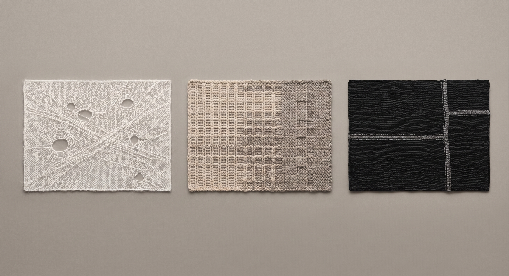
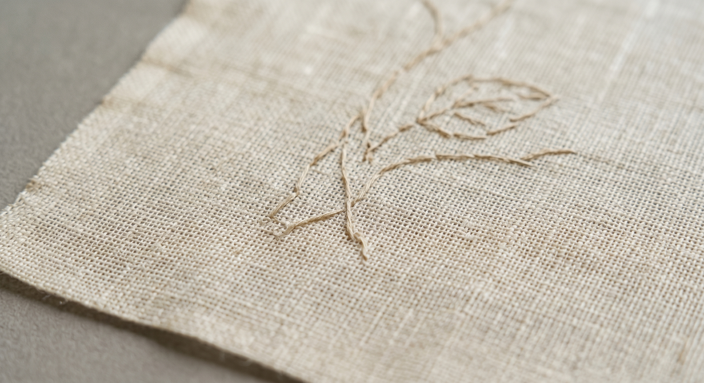
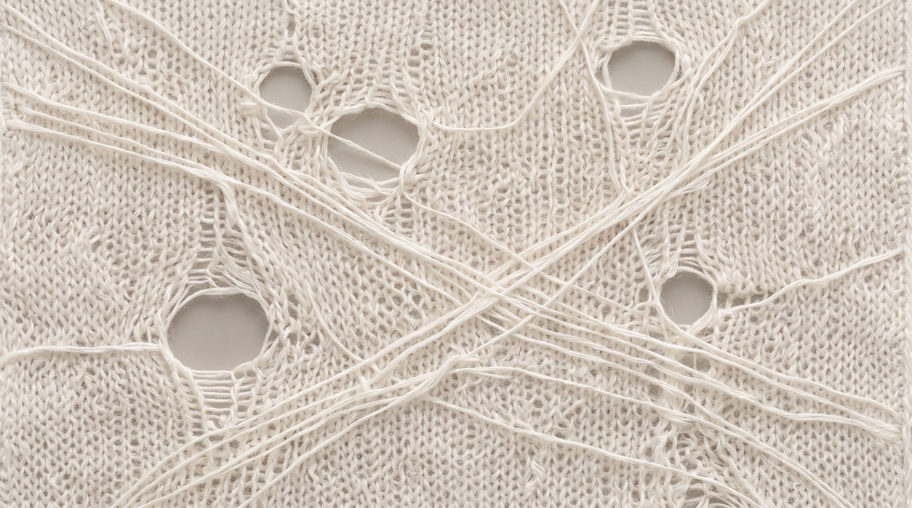
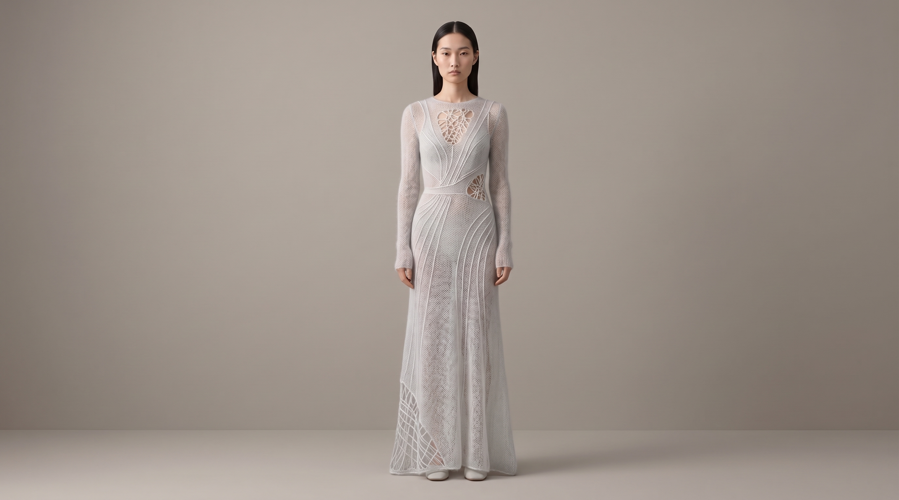

与夏布绣工艺专家面谈提案
江西夏布绣数字化转译与当代系列服装设计人才培训
我们希望邀请来自南昌非遗研究保护中心的专家以外部工艺导师的身份，共同参与这一项以工艺真实性、设计转译和青年人才培养为核心的项目。
申报单位：江西服装学院
项目负责人：李允耕
交流机构：南昌非遗研究保护中心
周期：2027.03 - 2028.06

这不是“把几个纹样放到衣服上”，而是把夏布的布性、针法、材料逻辑与文化语义真正转化为当代系列服装语言。
提示：
开场先讲“今天来是请教，不是催手续”。语气放稳，先说尊重，再说项目。
项目基础
为什么是夏布绣，而不是一般刺绣元素
夏布绣的独特价值
- “绣地即夏布”，材料属性本身就是语言的一部分。
- 天然经纬肌理、麻质触感与刺绣层次共同构成视觉气质。
- 既可转化为局部纹样，也可延展为结构、面料、节奏与系列叙事。
- 具有江西地域辨识度，也具备进入当代服装体系的独特优势。
项目最看重的不是“图样”
更重要的是夏布的布性、针法的节奏、样布的判断、留白的分寸，以及哪些表达真正符合夏布绣的工艺逻辑。
这些内容无法只靠资料整理完成，必须由真正熟悉工艺的人来带、来校核、来把关。


提示：
这里不要讲太多技术词。重点讲“材料 + 针法 + 留白 + 气质”，让对方感觉你理解的不是表层图案。
现实问题
为什么现在需要做这个项目
本次交流机构：南昌非遗研究保护中心
目前常见问题
- 服装应用多停留在元素借用、局部拼接和装饰化呈现。
- 数字化尝试多偏向图像更新、展示传播，缺少稳定流程。
- 年轻设计者往往会“看见图样”，却未真正理解工艺和材料。
- 缺少围绕具体作品产出的训练机制。
本项目的回应
- 先做工艺示范与材料实验，再进入设计转译。
- 把夏布绣从“保护型资源”转化为“可教学、可创作的设计资源”。
- 通过项目制训练，让学员最终形成系列服装成果。
- 建立可复制的创作型人才培养路径。
提示：
如果对方问“是不是为了申报而申报”，这里就强调：项目是为了解决“现在年轻人不会正确转化”的问题。
实施逻辑
项目如何展开
资源识别
整理纹样、针法、样布、题材、文化语义与图像样本。
工艺示范与材料实验
这是最关键的前端环节，也是最需要外部工艺导师参与把关的部分。
语汇提炼
把材料肌理、针法节奏与文化意象整理为可用于设计的语汇。
设计转译
进入主题叙事、概念板、廓形、材料适配与系列构思。
数字验证
用 AIGC / LLM / CLO 3D 进行比较、测试和展示验证，但不代替工艺判断。
成果展示与评图
形成系列服装、数字样衣、动态展示，并通过评图沉淀案例。
2027.06 - 2027.08 田野与资源采集
2027.09 - 2027.11 集中培训与立项
2027.12 - 2028.03 成果深化与孵化
2028.04 - 2028.06 汇报与结项
合作角色
我们希望邀请来自南昌非遗研究保护中心的专家担任：外部工艺导师
核心任务
- 夏布绣工艺示范
- 样布识别与样布指导
- 针法讲授与工作坊教学
- 文化真实性与工艺逻辑校核
- 必要时参与开题讨论 / 中期评图 / 结业答辩
我们希望得到的不是“挂名”
我们真正需要的是来自非遗研究与保护一线的判断：哪些理解是准确的，哪些表达会跑偏，哪些材料和工艺搭配才真正成立。
这份参与的价值，不在于形式，而在于让项目站得住、作品做得稳、学员学得真。
提示：
这里可以停一下，看对方反应。如果对方表情积极，顺势转到参与方式；如果谨慎，就先强调“不是长期占用很多时间”。
执行方式
我们设想的参与方式
优先参与环节
田野阶段
新余相关点位、样本采集、口述访谈、工艺观察
集中培训第3周
工艺示范、针法逻辑、样布识别、材料实验工作坊
项目深化阶段
围绕重点小组进行文化校核与阶段性评议
我们会怎么配合您
- 先沟通参与范围，再确定时间、学时和形式。
- 尽量集中安排，不无序占用您的时间。
- 拍摄、录像、归档和署名范围都会事先说清。
- 正式意向函和协议会按您的身份与工作方式调整表述。

合作边界
我们希望建立的合作原则
工艺优先
先理解夏布与针法，再进入设计表达。
文化准确
避免误读、浅化、拼贴式转化。
数字辅助
数字工具只做辅助，不替代工艺判断。
边界清楚
时间、资料使用、拍摄范围和署名方式均明确约定。
我们尤其重视：
项目中的 AIGC / LLM / CLO 3D 只用于主题梳理、方案比较、数字样衣与展示验证，真正涉及工艺真实性与文化边界的部分，必须以您的判断为准。
提示：
如果对方对 AI 有顾虑，这一页就是重点。要说清楚“数字工具是辅助，不是替代，也不是偷懒”。
面谈目标
今天我们最想确认四件事
您是否认可这个项目整体方向
您是否愿意以外部工艺导师身份继续沟通
您更适合参与哪些具体环节
会后我们是否可以向您发送简版说明和合作意向函草案
我们希望这个项目建立在真实的工艺理解和文化尊重之上，而不是停留在“把非遗元素做成视觉效果”的层面。
如果贵方愿意继续沟通，我们会把后续材料整理得尽量简洁、清楚、尊重沟通节奏。
提示：
这页结尾不要再扩展太多，顺势进入提问和记录。面谈的理想结果是“原则同意 + 允许继续发材料”。